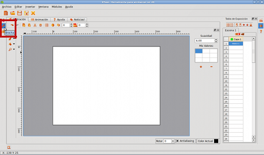
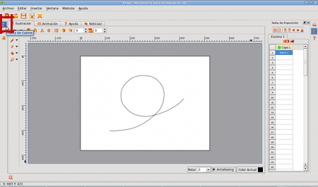

Fig #37. Sketching a guideline
Drawing Time
When we are working on the Animation module, we will have the pen as a tool automatically have at our disposal the first frame of animation.
Fig #36. Animation Module
Now, let's draw a line guide which will be defined by the trajectory of our butterfly, as defined in the script and using the Pencil tool is already selected:
Fig #37. Sketching a guideline
Note that you can adjust the trajectory of your guideline, using the Select Node, located in the toolbar:

Fig #38. Activating Nodes Selection
When you select the line you just draw, will look like:

Fig #39. Activating Nodes Selection
Now, change those nodes where the guideline requires to be smoothed. Our goal is to draw the curve that is as close to the path we want for our butterfly. Looking for a result like this:

Fig #40. Fixed Guideline
It's time to draw our protagonist. The first thing we do is to adjust the thickness of the line to our liking. Click the Properties button located in the brush left sidebar:
 |
 |
Fig #41. Brush Properties
And you adjust the thickness of the pen according to the type of line you want to work with:

Fig #42. Assigning a new thickness to Pencil
Now we only need to choose the color you want to start drawing. To do this, we click on the Color Palette button, located on the left sidebar:
 |
 |
Fig #43. Color Palette
We will use a shade of brown for the body and a blue hue to the wings. Let's start with brown:
Fig #44. Picking the brown color
Okay, now let's choose the Pen tool and start tracing:
 |
 |
Fig #45. Drawing the body of the butterfly
We change color to the wings, and finish drawing the first position of the butterfly. Remember that we are in the frame #1:
 |
 |
Fig #46. Drawing the butterfly wings
Tip: Because this version is still in development, it is likely that the program to close unexpectedly on some occasions. We recommend you record your exercise from the start.

Fig #47. Saving the project
We have ready the first part of our animation, now we must create new frames...